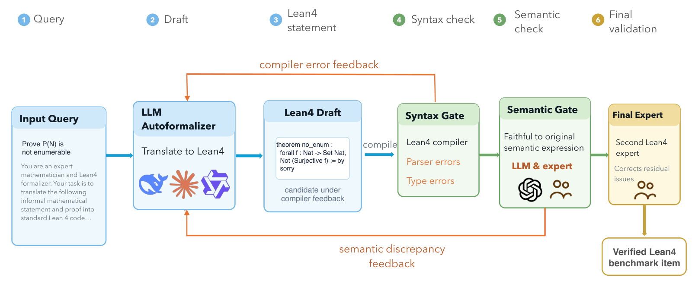
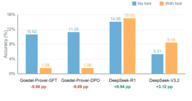

Introduces MathAdv, a diagnostic benchmark of 298 problems formalized in Lean 4 across 13 domains, evaluating theorem-proving LLMs.
Abstract
Formal theorem proving enables machine-verifiable evaluation of mathematical reasoning, yet existing benchmarks often emphasize aggregate proof accuracy, concentrate on a narrow range of mathematics, and provide limited evidence of robustness to equivalent reformulations. We introduce MathAdv, a diagnostic benchmark spanning 13 domains across undergraduate- and graduate-level mathematics. Alongside Lean 4 theorem proving, MathAdv provides up to three auxiliary tasks: multiple-choice questions that probe mathematical knowledge, fill-in-the-blank problems that isolate informal reasoning, and expert-crafted transformations that test robustness to problem presentation. Our evaluation of contemporary theorem provers yields four findings: formalization remains a major bottleneck; performance varies substantially across mathematical domains; natural-language guidance helps general-purpose LLMs but can hinder proof-specialized models; and mathematically equivalent reformulations expose substantial robustness limitations. Together, these results show how component-wise evaluation can reveal model capabilities and failure modes that aggregate theorem-proving accuracy obscures. The dataset and evaluation scripts are available at https://github.com/margotyjx/MathAdv.git.
Problem
Existing formal mathematics benchmarks report only aggregate proof accuracy, cover a narrow range of domains (mostly algebra and number theory), and rarely test robustness to equivalent problem reformulations. This obscures whether failures stem from knowledge gaps, reasoning errors, or formalization difficulty.
Approach
MathAdv is a diagnostic benchmark of 321 problems (298 formalized in Lean 4) spanning 13 undergraduate- and graduate-level domains, built through a human-in-the-loop autoformalization pipeline. Each problem includes up to three auxiliary tasks: multiple-choice questions probing mathematical knowledge, fill-in-the-blank/direct-answer problems isolating informal reasoning, and expert-crafted transformations testing robustness. Contemporary proof-step and whole-proof provers plus general-purpose LLMs are evaluated on end-to-end Lean 4 proof construction alongside the auxiliary tasks.

Figure 3: Human-in-the-loop autoformalization process for MathAdv.
Results
Formalization remains the major bottleneck (best model reaches 21.9% Lean 4 accuracy); performance varies substantially across domains; natural-language guidance helps general-purpose LLMs but can hinder proof-specialized models; and equivalent reformulations expose substantial robustness limitations.

Figure 5: Performance on Lean 4 formal proving with and without hints from MC questions.
Model
Accuracy (%)
DeepSeek-Prover-V1.5 RL + RMaxTS
16.56
Goedel-Prover-V2
21.88
GPT-5.4
10.62
DeepSeek-R1
10.94
DeepSeek-V3.2
5.31
Lean 4 theorem-proving accuracy of selected models on MathAdv